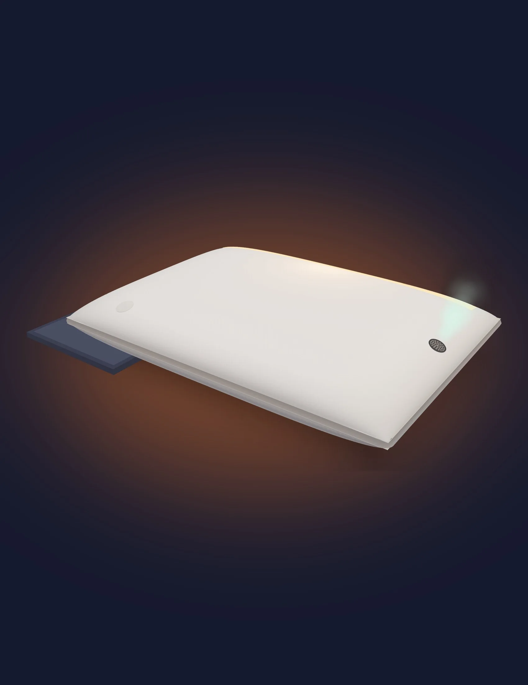

Almohada AuraSleep
164 USD
Precio de referencia · lanzamiento entre 149 y 179 USD
- Funda lavable en Blanco roto, Gris piedra o Beige cálido
- Base de carga por inducción
- Primer cartucho de aroma incluido
AuraSleep es la almohada que te despierta poco a poco, con una luz de amanecer y un aroma suave de menta o cítrico, 15 minutos antes de tu hora.
Proyecto de Emprendimiento: un objeto cotidiano, la almohada
Preventa (demostrativa) desde 149 USD*

La mayoría de las personas se despierta con una alarma sonora. El sonido interrumpe el sueño aunque estemos en una fase profunda, y el cuerpo responde como ante un sobresalto: cansancio, irritabilidad y una “cabeza pesada” que puede durar varios minutos.
El sonido interrumpe el sueño sin transición. Despertar desde el sueño profundo deja más torpeza y confusión, lo que se conoce como inercia del sueño; en su forma más marcada se llama despertar confusional.
El sobresalto activa la respuesta de estrés justo al iniciar el día.
En parejas o cuartos compartidos, la alarma de una persona interrumpe el sueño de la otra.
La hipótesis de que luz + aroma juntos funcionan mejor que cada uno por separado debe comprobarse con pruebas en personas.
AuraSleep sustituye la alarma sonora por un despertar secuencial y multisensorial. Trabaja de forma no invasiva sobre la vía visual indirecta (luz que atraviesa los párpados cerrados) y la vía olfativa (aroma dirigido a la nariz).
La calibración exacta (cuánta luz, cuánto aroma y cada cuánto) se ajusta según el perfil de cada persona.
Una cinta textil con fibras ópticas de 0.25 mm en el borde superior, con un LED de tono cálido. La luz sube despacio hasta un brillo tenue que atraviesa los párpados. No es una lámpara que te apunta a la cara.
En un lateral, a la altura de la nariz, un difusor del tamaño de una moneda con una microbomba silenciosa libera ráfagas cortas, sin llenar la habitación.
Programas la hora en una app por Bluetooth de bajo consumo, o con un botón táctil oculto bajo el textil.
Un sensor de presión en la espuma solo activa el sistema si hay una cabeza apoyada.
Batería de 4 V y 1200–1500 mAh para varios despertares por carga, recargada por inducción: sin cables ni conectores expuestos.
Funda lavable; el cartucho de aroma y el módulo LED se reemplazan sin cambiar la almohada. Sin pantallas ni altavoces.
48 × 68 cm, perfil ergonómico de 13 cm al centro y 10 cm en los bordes. Las fibras ópticas van en una costura del borde superior y, apagadas, se sienten como una cinta textil mate. El difusor queda escondido en el lateral y la electrónica en una bolsita interna acolchada.

Arrastra para girar · Ctrl + rueda para acercar
Perspectiva: la almohada con su base de carga por inducción, el botón táctil oculto y el difusor en el lateral.
Lo innovador de AuraSleep es la unión híbrida: un sistema que despierta con luz y aroma en una secuencia calibrada, dentro de la propia almohada. La innovación está en la experiencia de despertar.
| Solución actual | Qué hace | Qué le falta |
|---|---|---|
| Lámparas de amanecer Philips Wake-up Light, desde 2006 | Simulan el amanecer con luz | Solo luz; ocupan la mesita de noche |
| Despertadores de aroma SensorWake, 2014 | Liberan un aroma a la hora de la alarma | Solo aroma; es un aparato aparte |
| Almohadas inteligentes actuales | Monitorean el sueño, reducen ronquidos o ajustan la altura | No se encargan del despertar |
| AuraSleep | Luz de amanecer + aroma focalizado en la misma secuencia, dentro de la almohada | — |
La ventaja no está en comprar las piezas, sino en calibrar la secuencia (intensidad de luz, cantidad de aroma, frecuencia y distancia al rostro) según cada perfil. Eso exige pruebas con personas y datos acumulados.
Los cartuchos de aroma generan ventas cada trimestre, no solo la venta única de la almohada.
No compras ni acomodas otro aparato; solo programas la hora.
En nuestra búsqueda no encontramos un producto comercial que combine luz de amanecer y aroma focalizado dentro de la almohada. Antes de lanzar habría que hacer una búsqueda formal de patentes.
Usuario principal
Con trabajo o estudios exigentes, que ya invierten en bienestar; también parejas que comparten habitación.
Por qué les sirveSu rendimiento por la mañana depende de cómo despiertan, y la alarma silenciosa no despierta a la pareja.
Segundo grupo
Incluye a quienes tienen despertar confusional y a quienes ya usan lámparas de amanecer.
Por qué les sirveNo exige disciplina ni cambios de rutina: solo programar la hora. Integra la luz en la cama, sin ocupar la mesita.
Canales a mediano plazo
También programas de bienestar corporativo.
Por qué les sirveUna experiencia diferenciadora para huéspedes, pacientes y empleados; compras por volumen.
Por encima de una almohada ergonómica convencional y por debajo de las almohadas inteligentes de gama alta.
164 USD
Precio de referencia · lanzamiento entre 149 y 179 USD
9–14 USD
Uno cada tres meses, de menta o cítrico · 36–56 USD al año
Suscripción de cartuchos Demostrativo
4 al año, se envían a tu casa.
* Proyecto escolar. Precios y costos hipotéticos, sujetos a cotizaciones formales. No es una oferta de venta.
Está pensada para un despertar gradual; la calibración de luz y aroma se ajusta a cada persona. Como es un concepto, esto debe probarse con usuarios.
No. Son ráfagas cortas dirigidas a la nariz, desde un difusor del tamaño de una moneda.
La funda exterior sí. La electrónica va en una bolsita interna protegida.
No. Se carga por inducción en su base.
No hace ruido, y la luz y el aroma se dirigen a quien está apoyado en la almohada.
El sensor de presión no activa el sistema, así ahorra batería.
Sí, con el botón táctil oculto bajo el textil.
Es un riesgo que el equipo identificó: los aromas cerca del rostro requieren pruebas de seguridad y alergias antes de lanzar.
Del problema al cierre: la misma historia que cuenta este sitio, en el formato con el que la presentamos en clase.

AuraSleep · Presentación de venta
Se carga desde Canva, que puede usar sus propias cookies.
Abrir en Canva a pantalla completa (se abre en otra pestaña)
AuraSleep usa componentes que ya existen, cuesta menos de lo que se vende y suma un ingreso recurrente con los cartuchos.